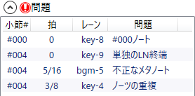
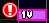

問題
譜面表示エリアで発生している問題の一覧です。
説明
- 問題があるノートは強調表示されます。
- 問題がある場合、エキスパンダーのヘッダー部分にが表示されます。
- 項目を選択すると、そのノートが存在する時間位置の付近にスクロールします。
-
「問題」には#000ノート、ノーツの重複、不正なメタノート、単独のLN終端の4種類があります。
-
#000ノート: 小節#000に可視(及び地雷、LN終端)のノートが存在します。
- 素朴な実装のBMSプレイヤーでは、楽曲開始直後にノートが降ってくることになるため、不親切な譜面になります。
- 基本的には#000には可視ノートは配置せず、少なくとも4拍の空白を用意するべきです。
-
ノーツの重複: 同じ位置、同じレーンに複数のノーツが存在します。
- ノートの複製や移動の結果発生することがあります。
-
BMSの規格において、ノートの重複は特に文法違反とはなりませんが、実際のプレイ時には一般に、
重なっているノートはそのうち1つしか判定が発生しないため、絶対に取ることができないノートとなります。
-
不正なメタノート: メタノート(不可視、地雷、LN終端)が不適切なレーンに存在しています。
- 演奏レーンに配置されていたノートを一括でBGMレーンに移動した場合などに発生します。
-
このアプリで開いている限り、ノートの種類は保存されますが、
「ファイルを保存」する際に、それら不正なメタノートは全て通常のノートに変換されます。 - 結果として意図しない音が鳴る可能性が生じるため、不正なメタノートは削除するべきです。
-
単独のLN終端: 対応するロング始端ノートがありません。
- そのレーンの最初のノートがロング終端であるか、ロング終端が連続で配置された場合に発生します。
-
単独のロング終端が実際のプレイ時にどう解釈されるかはBMSプレイヤー次第ですが、
恐らく通常のノートとして処理されるでしょう。
-
#000ノート: 小節#000に可視(及び地雷、LN終端)のノートが存在します。